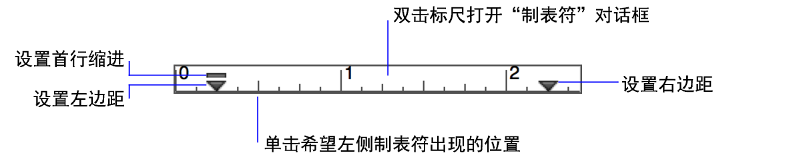

•在"检查器"中，单击"外观  "选项卡。在"文本"区域指定文本格式。
"选项卡。在"文本"区域指定文本格式。
可以指定字段中的文本以及布局上的文本在布局中的显示方式。
要维护在不同布局中对相同数据进行格式设置的灵活性，请使用布局模式将主要的字体和段落设置应用于布局中的字段对象。使用浏览模式可将粗体或斜体强调格式应用于字段中的特定单词。请不要在浏览模式下对整个字段内容设置格式，而应在布局模式下重新设置其字段对象的格式。
1. 在布局模式下，选择文本或字段对象。在浏览模式下，选择字段或字段中的文本。
2. 执行以下某项操作：
•从"格式"菜单或格式栏中选择。可以从"样式"子菜单中选择多种样式。（有关"竖式书写"方向的信息，请参阅为垂直书写方式设置字段和文本格式。）
•在"检查器"中，单击"外观 "选项卡。在"文本"区域指定文本格式。
1. 在布局模式下，选择文本或字段对象。在浏览模式下，选择字段或字段中的文本。
2. 执行以下某项操作：
•选择"格式"菜单 >"行间距">"其他"。然后指定"段落和制表符"对话框中的设置。
•单击格式栏中的对齐和间距按钮。
•在布局模式下，选择检查器中的"外观 "选项卡"段落"区域中的选项。
对于"行间距"，请在"高度"、"之上"和"之下"中输入一个值，然后选择度量单位。"行"的度量单位取决于所使用字体，并且稍微大于字体高度。
1. 在布局模式下，选择文本或字段对象。在浏览模式下，选择字段或字段中的文本。
2. 选择"格式"菜单 >"行间距">"其他"，然后单击"制表符"。
在布局模式下，可以使用检查器中的"外观 "选项卡的"制表符"区域。
3. 选择制表符类型，为"定位"键入对齐值，然后单击"新建"。
•对于小数点制表符，选择"对齐位置"，键入对齐字符，然后为"定位"键入一个值。
•使用某个字符填充制表符前的空白区域（如电话通讯录中姓名和电话号码之间的句点），为"填写字符"键入字符。
•要更改制表符，请单击列表中的制表符，更改设置，然后单击"设置"。
•要清除制表符，请单击列表中的制表符，然后单击"清除"。
无法在布局模式下使用标尺设置字段的格式，必须使用"段落和制表符"对话框。
1. 在布局模式下，选择"查看"菜单 >"标尺"，然后创建文本或选择现有文本。在浏览模式下，选择"查看"菜单 >"标尺"，然后选择字段。
2. 将首行、左边距或右边距标记拖到新位置。

•要从标尺中删除制表符，请将其向下拖离该标尺。
•要单独移动首行缩进标记或左边距标记，请按住 Alt 键并拖动 (Windows) 或按住 Option 键并拖动 (macOS) 标记。
•可以在布局模式和浏览模式之间创建冲突字段数据格式。此处列出了 FileMaker Pro Advanced 解决文本格式冲突的方式：
•在布局"模式"下设置字段格式时，该格式将只影响字段对象中特定项的外观。
•在浏览模式下设置字段数据格式时，此格式将随数据一起存储，然后可以在显示该字段的任何布局中看到该格式。在浏览模式下设置的字段数据格式优先于在布局模式下设置的数据格式。
•要添加或更改自定义颜色，请参阅设置填充、线条样式、边框、阴影和内边距。
•要消除在浏览模式下应用的格式，请在浏览模式下重新设置文本的格式，或导出然后重新导入数据。
•当您将文本粘贴到字段中时：
•未设置格式的文本会自动获取现有字段文本的默认格式。
•已设置格式的文本保留其格式。要将粘贴的文本的格式更改为现有的文本格式，请在粘贴文本后立即选择"编辑"菜单 >"撤消设置格式"。
•在浏览模式下，可以对数值、日期、时间和时间戳字段中的特定字符设置格式（例如，只将日期的年份设置为粗体）。但是，只有在布局模式下利用"按输入格式"选项设置字段对象的格式时才能显示和打印特殊格式。如果指定任何其他字段格式选项，则特殊格式只有在字段处于活动状态时才显示在浏览模式中。请参阅在布局模式下设置字段对象的格式和属性。
•macOS：如果您已针对某个字段设置制表位，则需要按 Option-Tab 将插入点移动到下一个制表位。
•要更改用于标尺的度量单位，请参阅使用标尺和网格。